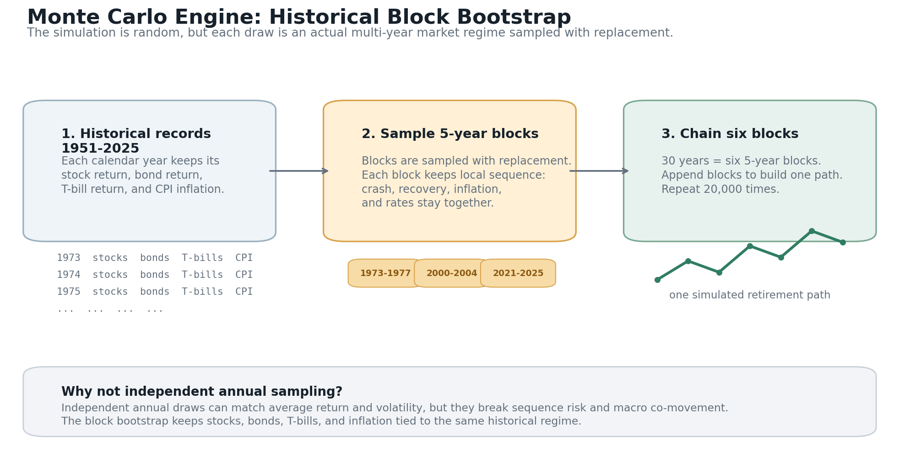
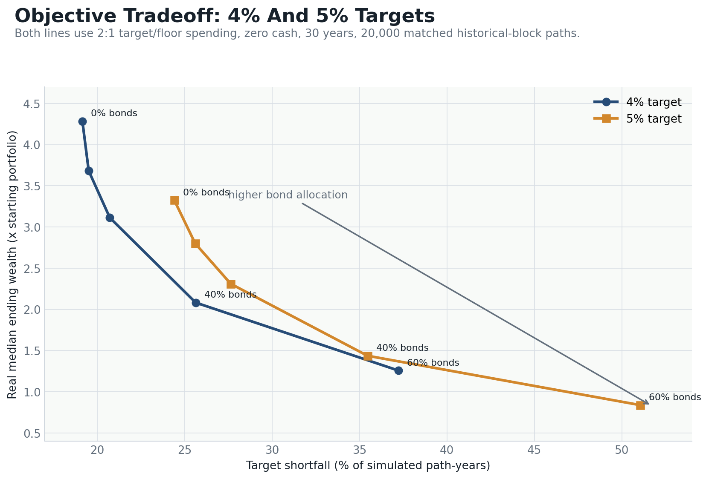

Executive Summary
Imagine someone retiring with a portfolio of a few million dollars. Some spending is mandatory: food, basic housing, utilities, insurance, taxes, and health care. Other spending is discretionary: travel, nicer housing, gifts, upgrades, and the parts of life that make retirement feel abundant.
That budget naturally creates two retirement objectives. The target is the preferred lifestyle. The floor is the minimum acceptable lifestyle. This report replaces labels like conservative and aggressive with measurable tradeoffs: ruin, years below starting wealth, floor-breach risk, shortfall depth, and real ending wealth.
The useful comparison is at one spending rate. Classic fixed-real 4% 60/40 has 4.50% ruin in this model — in the Trinity neighborhood. The same 4% target with a flexible cap/floor rule cuts stock-only ruin to 0.15%. Adding a permanent 40% 10-year Treasury sleeve then cuts ruin from 30 paths to 1 path, while years below starting wealth rise from 19.16% to 25.63% and real median ending wealth falls from 4.28x to 2.08x.
| Benchmark | Spending rule | Bonds | Ruin | Years wealth below start | Ever miss target | Integrated target loss | Real final median |
|---|---|---|---|---|---|---|---|
| 4% stock-only | 4% target / 2% floor, flexible | 0% | <0.2% (30 paths; 95% CI 0.11–0.21%) | 19.16% | 60.38% | 4.78% | 4.28x |
| 4% 60/40 | 4% target / 2% floor, flexible | 40% | <0.2% (1 path; 95% CI 0.00–0.03%) | 25.63% | 64.84% | 5.20% | 2.08x |
| Classic fixed-real 4% 60/40 | Fixed 4%, no spending flexibility | 40% | 4.50% (901 paths; 95% CI 4.23–4.80%) | 0.76% | 4.50% | 0.68% | 2.00x |
| 5% stock-only | 5% target / 2.5% floor, flexible | 0% | 0.98% (197 paths; 95% CI 0.86–1.13%) | 24.41% | 63.88% | 6.67% | 3.32x |
| 5% 60/40 | 5% target / 2.5% floor, flexible | 40% | 0.21% (41 paths; 95% CI 0.15–0.28%) | 35.46% | 71.65% | 8.43% | 1.44x |
Flexible 4% stock-only still misses the target on 60.38% of paths. Integrated target loss, which weights depth rather than a binary miss, is 4.78% for stock-only versus 5.20% for 60/40. Ruin rates below 0.2% are shown as counts plus a 95% Wilson interval; one path in 20,000 is not a precise rate.
Scenario And Spending Rule
Food, basic housing, utilities, insurance, taxes, health care, and other expenses that cannot be cut without changing the retiree's minimum acceptable life.
Vacations, nicer housing, upgrades, gifts, and other spending that can be reduced when markets are bad without immediately creating ruin.
The report converts that budget into percentage rules. Experiments 1–4 use a 5% target and 2.5% floor. Experiment 5 and the summary table also show the 4% target that matches the traditional withdrawal-rate baseline.
| Portfolio | Target (5%) | Floor (2.5%) |
|---|---|---|
| $2M | $100,000 | $50,000 |
| $3M | $150,000 | $75,000 |
| $4M | $200,000 | $100,000 |
| $5M | $250,000 | $125,000 |
| $6M | $300,000 | $150,000 |
| $10M | $500,000 | $250,000 |
For the 5% baseline, the withdrawal rule is:
target = 5.0% of initial portfolio, inflation adjusted floor = 2.5% of initial portfolio, inflation adjusted cap = 5.0% of current portfolio after that year's market return withdrawal = min(current portfolio, max(floor, min(target, cap)))
The floor can override the cap. If the remaining portfolio cannot fund the floor, the withdrawal is limited to the remaining portfolio, and that year is counted as a floor breach.
Metric definitions
- Ruin is the percent of simulated paths whose terminal wealth is at or below zero. Intervals are 95% Wilson intervals on that path count.
- Target shortfall / years wealth below start is the percent of all simulated path-years in which withdrawal is below the real target. When the target rate equals the cap rate, that event is exactly “real wealth after the year’s return is below the starting portfolio.”
- Ever miss target is the percent of paths with at least one shortfall year.
- Integrated target loss is the mean, over all path-years, of the shortfall as a fraction of target. It weights depth, not just a binary miss.
- Floor breach is the percent of path-years in which the portfolio cannot fund the real floor.
- Real final p10 / median is ending wealth in starting-year purchasing power, divided by starting wealth.

Model
The engine is a historical block-bootstrap Monte Carlo. It generates 20,000 random 30-year retirement paths by sampling contiguous 5-year historical blocks with replacement, not independent normal draws. Seed 20260513.

Each sampled calendar year keeps its observed stock return, bond return, T-bill return, and CPI inflation rate. That preserves local sequences such as crashes followed by recoveries, inflation clusters, and stock/bond/inflation co-movement. Interior years appear in more overlapping blocks than the sample endpoints.
The main lookback window is 1951–2025 from Aswath Damodaran’s annual return dataset, using the S&P 500 total-return series with dividends reinvested. Inflation comes from FRED CPI-U, calculated December-to-December. Cash is a T-bill-like reserve sampled from the same year, not an assumed 0% real asset.
Annual chronology
- Sample the next historical year from the current 5-year block.
- Apply sampled stock, bond, and T-bill returns, then deflate by that year's CPI inflation.
- Compute the spending cap from the post-return real portfolio value.
- Withdraw at year-end under the target/cap/floor rule.
- Replenish cash when the strategy calls for it, rebalance bonds annually, and record outcomes.
Because the model deflates returns each year, all ending-wealth multiples are real, CPI-adjusted multiples of the starting portfolio.
Experiment 1: Cash Buffer
This experiment varies the cash buffer from 0 to 5 years of target spending on the 5% baseline, with the remaining portfolio in the Damodaran S&P 500 total-return series.
| Cash buffer | Ruin | Years wealth below start | Floor breach | Real final p10 | Real final median |
|---|---|---|---|---|---|
| 0 years | 0.98% | 24.41% | 0.14% | 0.63x | 3.32x |
| 1 years | 0.88% | 24.94% | 0.12% | 0.61x | 3.14x |
| 2 years | 0.79% | 26.09% | 0.10% | 0.59x | 2.87x |
| 3 years | 0.72% | 27.67% | 0.08% | 0.55x | 2.57x |
| 5 years | 0.57% | 32.24% | 0.05% | 0.45x | 1.94x |

Conclusion: T-bill cash slightly lowers ruin and floor-breach risk, but it is expensive. A 5-year buffer lowers ruin from 0.98% to 0.57%, while years below start rise from 24.41% to 32.24% and median ending wealth falls from 3.32x to 1.94x. The rest of the report uses zero cash as the baseline.
Experiment 2: Historical Window Sensitivity
This experiment keeps the 5% target, 2.5% floor, and no cash buffer. It changes only the lookback window.
| History window | Ruin | Years wealth below start | Floor breach | Real final p10 | Real final median |
|---|---|---|---|---|---|
| 50 years (1976-2025) | 0.28% | 18.83% | 0.04% | 0.90x | 4.55x |
| 75 years (1951-2025) | 0.98% | 24.41% | 0.14% | 0.63x | 3.32x |
| 98 years (1928-2025) | 2.37% | 30.07% | 0.45% | 0.43x | 2.65x |

Conclusion: the 75-year window remains the main baseline because it keeps modern severe sequences, including the 1970s inflation problem, while excluding the Great Depression and World War II regime from the central case. The 98-year result should still be read as a legitimate stress test, not dismissed. All of these windows are still US large-cap history.
Experiment 3: Safe Withdrawal Search
Zero cash, zero bonds. Target spending rates from 4% to 10% of the initial portfolio. The floor is always 50% of the target.
| Target spending rate | Floor | Ruin | Years wealth below start | Floor breach | Real final p10 | Real final median |
|---|---|---|---|---|---|---|
| 4% | 2.0% | 0.15% | 19.16% | 0.02% | 0.90x | 4.28x |
| 5% | 2.5% | 0.98% | 24.41% | 0.14% | 0.63x | 3.32x |
| 6% | 3.0% | 3.12% | 30.50% | 0.58% | 0.39x | 2.44x |
| 7% | 3.5% | 7.21% | 37.22% | 1.58% | 0.13x | 1.61x |
| 8% | 4.0% | 14.09% | 44.87% | 3.44% | 0.00x | 0.97x |
| 9% | 4.5% | 23.28% | 52.71% | 6.29% | 0.00x | 0.61x |
| 10% | 5.0% | 35.07% | 60.26% | 10.28% | 0.00x | 0.34x |

| Target spending rate | Years wealth below start | Ever miss target | Median shortfall years if any | Avg shortfall-year spending | Avg target gap | Integrated target loss |
|---|---|---|---|---|---|---|
| 4% | 19.16% | 60.38% | 6 | 3.00% | 24.97% | 4.78% |
| 5% | 24.41% | 63.88% | 9 | 3.63% | 27.32% | 6.67% |
| 6% | 30.50% | 69.35% | 11 | 4.19% | 30.25% | 9.23% |
| 7% | 37.22% | 72.49% | 16 | 4.64% | 33.67% | 12.53% |
| 8% | 44.87% | 77.07% | 20 | 5.02% | 37.27% | 16.72% |
| 9% | 52.71% | 81.54% | 23 | 5.29% | 41.25% | 21.74% |
| 10% | 60.26% | 85.28% | 25 | 5.44% | 45.58% | 27.47% |
Conclusion: the withdrawal rate is a risk choice, not a magic number. Both 4% and 5% have low ruin here, but 4% is much lower: 0.15% versus 0.98%. Even at 4%, 60.38% of paths go below starting wealth at least once. Above 6%, the plan starts depending too heavily on favorable sequences.
Experiment 4: Block Size Sensitivity
5% target, 2.5% floor, zero cash, zero bonds, 75-year Damodaran history. Only the bootstrap block size changes.
| Block size | Ruin | Years wealth below start | Floor breach | Real final p10 | Real final median |
|---|---|---|---|---|---|
| 1 year | 1.70% | 23.29% | 0.36% | 0.64x | 3.87x |
| 3 years | 1.14% | 22.50% | 0.23% | 0.69x | 3.55x |
| 5 years | 0.98% | 24.41% | 0.14% | 0.63x | 3.32x |
| 10 years | 2.20% | 27.22% | 0.32% | 0.46x | 2.96x |
Conclusion: block size is a modeling assumption, not something to optimize until it best fits the past. Very short blocks break historical sequencing; very long blocks replay old macro regimes too literally. A 5-year block is the working compromise.
Experiment 5: Bonds And 60/40
Zero cash. The bond sleeve is Damodaran 10-year Treasury total returns, rebalanced annually, with crash withdrawals going cash → bonds → equity. That is a permanent duration sleeve, not TIPS, not a ladder, and not pro-rata spending from a balanced fund.
4% Target / 2% Floor
| Bond allocation | Ruin | Years wealth below start | Floor breach | Real final p10 | Real final median |
|---|---|---|---|---|---|
| 0% bonds | <0.2% (30 paths; 95% CI 0.11–0.21%) | 19.16% | 0.02% | 0.90x | 4.28x |
| 10% bonds | <0.2% (10 paths; 95% CI 0.03–0.09%) | 19.52% | 0.00% | 0.88x | 3.68x |
| 20% bonds | <0.2% (3 paths; 95% CI 0.01–0.04%) | 20.73% | 0.00% (9 path-years) | 0.84x | 3.11x |
| 40% bonds | <0.2% (1 path; 95% CI 0.00–0.03%) | 25.63% | 0.00% (3 path-years) | 0.71x | 2.08x |
| 60% bonds | <0.2% (1 path; 95% CI 0.00–0.03%) | 37.24% | 0.00% (1 path-years) | 0.56x | 1.26x |
5% Target / 2.5% Floor
| Bond allocation | Ruin | Years wealth below start | Floor breach | Real final p10 | Real final median |
|---|---|---|---|---|---|
| 0% bonds | 0.98% | 24.41% | 0.14% | 0.63x | 3.32x |
| 10% bonds | 0.65% | 25.61% | 0.08% | 0.61x | 2.80x |
| 20% bonds | 0.43% | 27.64% | 0.04% | 0.59x | 2.31x |
| 40% bonds | 0.21% | 35.46% | 0.02% | 0.50x | 1.44x |
| 60% bonds | 0.27% | 51.07% | 0.02% | 0.38x | 0.84x |

0% bonds
24.41% of years below starting wealth and 3.32x median ending wealth.
60% bonds
51.07% of years below starting wealth and 0.84x median ending wealth.
| Bond allocation | Years wealth below start | Ever miss target | Median shortfall years if any | Avg shortfall-year spending | Avg target gap | Integrated target loss |
|---|---|---|---|---|---|---|
| 0% bonds | 24.41% | 63.88% | 9 | 3.63% | 27.32% | 6.67% |
| 10% bonds | 25.61% | 63.27% | 10 | 3.70% | 25.94% | 6.64% |
| 20% bonds | 27.64% | 67.12% | 10 | 3.76% | 24.82% | 6.86% |
| 40% bonds | 35.46% | 71.65% | 14 | 3.81% | 23.78% | 8.43% |
| 60% bonds | 51.07% | 84.02% | 21 | 3.75% | 24.97% | 12.75% |

Ending wealth is a longevity cushion. A 30-year simulation is a modeling horizon, not a known lifespan. The difference between ending with 3.32x and 1.44x is the reserve that protects extra years, late-life care, and bad post-year-30 returns. It is also the median of a right-skewed equity terminal-wealth distribution.
Conclusion: this 10-year Treasury sleeve reduces ruin and floor-breach risk, but it does not reduce time below starting wealth. At 4%, stock-only already has 0.15% ruin; 60/40 cuts that to 1 path, while years below start rise from 19.16% to 25.63%. The average gap in a shortfall year is smaller with 40% bonds, but integrated target loss is still worse: 8.43% versus 6.67% for stock-only at the 5% target.
Experiment 6: Tests That Can Change The Conclusion
These rows use the same seed family and 5-year blocks as the main tables, with 20,000 paths. They isolate one assumption at a time.
| Experiment | Ruin | Years wealth below start | Ever miss | Integrated target loss | Real final p10 | Real final median |
|---|---|---|---|---|---|---|
| 4% crash-sell-bonds 60/40 | <0.2% (1 path; 95% CI 0.00–0.03%) | 25.63% | 64.84% | 5.20% | 0.71x | 2.08x |
| 4% pro-rata 60/40 | <0.2% (1 path; 95% CI 0.00–0.03%) | 25.63% | 64.84% | 5.20% | 0.71x | 2.08x |
| 4% TIPS-floor proxy 50% | <0.2% (0 paths; 95% CI 0.00–0.02%) | 40.50% | 77.72% | 8.14% | 0.56x | 1.09x |
| 4% stock-only beginning-of-year | <0.2% (33 paths; 95% CI 0.12–0.23%) | 21.22% | 68.72% | 5.32% | 0.88x | 4.03x |
| 4% stock-only 40-year | 0.69% (137 paths; 95% CI 0.58–0.81%) | 16.72% | 60.63% | 4.42% | 1.13x | 8.06x |
| 4% stock-only half ERP | <0.2% (0 paths; 95% CI 0.00–0.02%) | 35.89% | 72.30% | 7.29% | 0.59x | 1.26x |
| 4% stock-only circular blocks | <0.2% (34 paths; 95% CI 0.12–0.24%) | 17.56% | 57.92% | 4.31% | 1.00x | 4.90x |
Read: Pro-rata 60/40 and crash-sell-bonds are close: 25.63% vs 25.63% years below start, 2.08x vs 2.08x median wealth. A 50% TIPS-floor proxy (0% real) spends 40.50% of years below start and ends at 1.09x. Halving the equity premium over T-bills is the result that can change the story: 35.89% years below start and 1.26x median wealth. Beginning-of-year withdrawals keep the same spending rule but apply the year’s return after the withdrawal: 0.17% ruin, 21.22% years below start.
Interpretation
The traditional allocation argument says bonds reduce sequence risk. That is true, but incomplete. This spending rule already cuts discretionary spending before the portfolio is exhausted. Once that is true, the value of a permanent 10-year Treasury sleeve falls on the “years below start / median wealth” score this paper tracks.
Under this flexible rule, extra permanent 10-year Treasuries buy a small cut in an already-small ruin rate and pay for it in years the real portfolio stays below its start.
That is a scoped result, not a falsification of 60/40. The sample is US large-cap history from 1951 to 2025. Bonds here are 10-year Treasury total returns. Withdrawals are year-end after annual returns. A household that values floor certainty, a smaller left tail, or not sitting through a 50% equity drawdown can still prefer a bond sleeve. A TIPS-floor proxy and a halved equity premium are in Experiment 6; they are the cases most likely to change how much stock-only ‘lifestyle reliability’ is just the realized US premium.
Limitations And Next Tests
Important limitations
- Taxes and fees are ignored.
- Returns are annual, not monthly. Withdrawals happen after annual returns.
- Bonds are 10-year Treasury total returns, not TIPS or a ladder.
- Crash withdrawals sell bonds before equity; that is not pro-rata 60/40.
- Overlapping 5-year blocks overweight interior years and replay the same crises.
- No Social Security, pension, mortgage, or health shock modeling.
- No international returns or haircut to the realized US equity premium.
Follow-up tests
- TIPS or short-Treasury floor funding, equities for surplus.
- Pro-rata spending from a balanced fund.
- Beginning-of-year and monthly withdrawals.
- 35- and 40-year longevity horizons.
- Lower equity-premium / developed-ex-US samples.
- Circular or non-overlapping blocks.
- Social Security or a pension covering part of the floor.
The result should be framed narrowly: under this specific flexible spending rule, with annual returns, sampled historical CPI inflation, and a permanent 10-year Treasury sleeve, extra defensive allocation did not improve the selected “years below start plus median wealth” score. Several items that used to be future work are now in Experiment 6: TIPS-floor proxy, pro-rata 60/40, beginning-of-year withdrawals, a 40-year horizon, a 50% equity-premium haircut, and circular blocks.
A sibling monthly report, Can A Hybrid Credit Line Reduce Forced Selling?, tests a cap-respecting credit line on S&P 500 total-return data from 1988 onward. Those ruin and shortfall rates are not comparable to the annual tables above.